Code
pacman::p_load( tmap, knitr, tidyverse, sf, sfdep,
kableExtra, DT, Kendall, classInt,
ggplot2, dplyr,tidyr, patchwork)Urban mobility is a crucial component of sustainable city development, influencing not only transportation efficiency but also environmental impact and quality of life. In rapidly urbanizing cities like Singapore, public bus services play a central role in connecting communities and supporting daily commuting activities. With the increasing digitalization of transportation infrastructure — including smart cards, GPS systems, and real-time passenger tracking — large volumes of spatio-temporal data are now available to analyze movement patterns more precisely than ever before.
However, much of this data remains underutilized, as conventional GIS-based approaches often focus on simple mapping and visualization rather than rigorous spatial statistics. To address this gap, this study aims to apply advanced geospatial analytical techniques to uncover deeper insights into Singapore’s bus passenger mobility. Specifically, it focuses on identifying localized clustering patterns and temporal dynamics of travel demand, using Local Measures of Spatial Autocorrelation (LMSA) and Emerging Hot Spot Analysis (EHSA).
The objectives of this project are therefore threefold:
To examine how bus passenger trips vary spatially across different neighborhoods and time periods, revealing localized areas of high and low travel demand.
To identify statistically significant hot spots, cold spots, and outliers in passenger volumes using LMSA methods such as Local Moran’s I, Local Geary’s C, and Getis-Ord Gi*.
To detect evolving mobility patterns through EHSA, categorizing temporal changes in hot and cold spots (e.g., new, intensifying, diminishing).
By integrating spatial and temporal perspectives, the study seeks to enhance understanding of urban mobility behavior and provide data-driven insights for smarter and more adaptive transport planning in Singapore.
The first component, Geospatial Data Science, involves the construction of a spatial analytical framework by deriving a hexagonal grid system with a 375-meter resolution to represent Traffic Analysis Zones (TAZs) across Singapore. Using passenger trip records provided by the Land Transport Authority (LTA) DataMall, the total number of trips originating from each hexagon is computed for three key time intervals: weekday morning peak (6 a.m.–9 a.m.), weekday afternoon peak (5 p.m.–8 p.m.), and weekend/holiday (11 a.m.–8 p.m.). The resulting datasets are visualized through thematic maps to explore the spatial distribution of passenger flows. These visualizations provide preliminary insights into how bus mobility varies between neighborhoods and across different periods of the week.
The second component, Local Measures of Spatial Autocorrelation (LMSA), applies local spatial statistics—including Local Moran’s I, Local Geary’s C, and Getis-Ord Gi*—to the hexagon-level passenger data. Unlike global indices that summarize overall spatial relationships, these local measures allow for the identification of statistically significant clusters of high or low values (hotspots and coldspots) and spatial outliers (locations that differ sharply from their surroundings). By visualizing only statistically significant areas (p < 0.05), this step reveals the geographic concentration and intensity of commuting demand within the city.
The third component, Emerging Hot Spot Analysis (EHSA), extends the spatial analysis into the temporal domain. Using a space-time cube representation of passenger trip data, EHSA combines the local Gi* statistic with the Mann–Kendall trend test to identify not only where hotspots and coldspots occur, but also how they evolve over time. The analysis classifies areas into categories such as new, intensifying, diminishing, or sporadic hot and cold spots, offering a dynamic view of how commuting patterns shift between weekdays and weekends.
tmap — Used for creating static and interactive thematic maps to visualize spatial data.
knitr — Enables dynamic report generation and integrates R code chunks within Quarto documents.
tidyverse — A collection of packages for data manipulation, cleaning, and visualization using a consistent grammar.
sf — Provides tools for handling, analyzing, and visualizing spatial vector data using simple feature objects.
sfdep — Extends sf by offering spatial dependence and autocorrelation analysis, including Moran’s I and Geary’s C.
kableExtra — Enhances table formatting and styling in HTML or PDF outputs for professional report presentation.
DT — Provides an interface to the JavaScript DataTables library for rendering interactive and searchable data tables.
Kendall — Used to perform Kendall’s rank correlation and trend tests for non-parametric statistical analysis.
classInt — Provides classification methods (e.g., equal interval, quantile, natural breaks) for dividing continuous variables into categorical intervals, commonly used for mapping color scales and legend consistency.
ggplot2 — A visualization system based on the Grammar of Graphics, supporting layered plotting, customizable themes, and extensions to create high-quality statistical graphics.
dplyr — A core data manipulation library offering efficient, pipe-friendly verbs such as filter(), select(), mutate(), summarise(), and arrange() for data transformation.
tidyr — A data tidying package used for reshaping datasets between wide and long formats, handling missing values, and unnesting nested data structures (e.g., pivot_longer(), complete(), unnest()).
patchwork — Combines multiple ggplot2 plots into customized grid layouts (side-by-side, stacked, or composite plots), allowing for comparative visualization and multi-panel figures.
pacman::p_load( tmap, knitr, tidyverse, sf, sfdep,
kableExtra, DT, Kendall, classInt,
ggplot2, dplyr,tidyr, patchwork)To begin the analysis, three datasets were imported into R.
The first dataset, odbus, was read from origin_destination_bus_202508.csv containing over 5.8 million records of bus origin–destination trips from LTA DataMall. It includes variables such as YEAR_MONTH, DAY_TYPE, TIME_PER_HOUR, ORIGIN_PT_CODE, DESTINATION_PT_CODE, and TOTAL_TRIPS, which capture temporal patterns and travel flows across the public bus network.
The second dataset, mpsz, was loaded from an RDS file (mpsz_sf.rds) containing 332 subzone polygons of Singapore. This spatial dataset provides the geographic boundaries necessary for spatial aggregation and visualization of transport activity.
Finally, the BusStop shapefile was imported using the st_read() function from the same LTA DataMall source, followed by a coordinate system transformation to SVY21 (EPSG:3414). This dataset contains 5,172 point features representing individual bus stops, each identified by a BUS_STOP_N code and location description.
Together, these three datasets form the foundation for integrating travel demand data with spatial boundaries and point-based transport infrastructure in subsequent geospatial analysis.
BusStop = st_read(dsn = "data/LTADataMall/",
layer = "BusStop") %>%
st_transform(crs = 3414)Reading layer `BusStop' from data source
`/Users/liyuquan/yuquan6688/626_yuquan/Take-home_Ex/Take-home_Ex02/data/LTADataMall'
using driver `ESRI Shapefile'
Simple feature collection with 5172 features and 2 fields
Geometry type: POINT
Dimension: XY
Bounding box: xmin: 3970.122 ymin: 26482.1 xmax: 48285.52 ymax: 52983.82
Projected CRS: SVY21glimpse(BusStop)Rows: 5,172
Columns: 3
$ BUS_STOP_N <chr> "65059", "16171", "61101", "01239", "17269", "11291", "1153…
$ LOC_DESC <chr> "ST ANNE'S CH", "YUSOF ISHAK HSE", "BLK 120", "SULTAN PLAZA…
$ geometry <POINT [m]> POINT (35565.66 41659.52), POINT (21439.91 31253.63),…mpsz = read_rds("data/rds/mpsz_cl.rds")
glimpse(mpsz)Rows: 327
Columns: 5
$ REGION_N <chr> "CENTRAL REGION", "CENTRAL REGION", "CENTRAL REGION", "CENT…
$ PLN_AREA_N <chr> "BUKIT MERAH", "BUKIT MERAH", "OUTRAM", "DOWNTOWN CORE", "D…
$ SUBZONE_N <chr> "DEPOT ROAD", "BUKIT MERAH", "CHINATOWN", "PHILLIP", "RAFFL…
$ SUBZONE_C <chr> "BMSZ12", "BMSZ02", "OTSZ03", "DTSZ04", "DTSZ05", "OTSZ04",…
$ geometry <MULTIPOLYGON [m]> MULTIPOLYGON (((25910.34 29..., MULTIPOLYGON (…odbus <- read_csv("data/LTADataMall/origin_destination_bus_202508.csv")
glimpse(odbus)Rows: 5,876,969
Columns: 7
$ YEAR_MONTH <chr> "2025-08", "2025-08", "2025-08", "2025-08", "2025-…
$ DAY_TYPE <chr> "WEEKENDS/HOLIDAY", "WEEKENDS/HOLIDAY", "WEEKENDS/…
$ TIME_PER_HOUR <dbl> 9, 13, 21, 16, 18, 14, 20, 12, 23, 20, 5, 16, 6, 2…
$ PT_TYPE <chr> "BUS", "BUS", "BUS", "BUS", "BUS", "BUS", "BUS", "…
$ ORIGIN_PT_CODE <chr> "84671", "10099", "64601", "53009", "80051", "7003…
$ DESTINATION_PT_CODE <chr> "84131", "09048", "64611", "50029", "70251", "0122…
$ TOTAL_TRIPS <dbl> 3, 31, 3, 10, 4, 1, 10, 4, 21, 17, 1, 512, 1, 2, 1…This step filters and retains only the bus stops that are spatially located within the administrative boundaries of Singapore by performing a spatial join between the BusStop and mpsz datasets using the st_within() function.
BusStop_in_SG <- st_join(
BusStop, mpsz,
join = st_within,
left = FALSE)tm_shape(mpsz) +
tm_polygons() +
tm_shape(BusStop_in_SG) +
tm_dots()
A regular hexagonal grid is generated across the entire Singapore map with a 750-meter cell size using st_make_grid(). This creates a consistent spatial unit for aggregating and analyzing trip data.
hexagon <- st_make_grid(mpsz,
cellsize = 750,
what = "polygon",
square = FALSE) %>%
st_sf()Each hexagon is checked for intersecting bus stops, and only those containing at least one bus stop are retained. This ensures that subsequent analyses focus only on areas with actual transport activity.
hexagon$busstop_count =
lengths(st_intersects(
hexagon, BusStop_in_SG))
hexagon <- filter(
hexagon, busstop_count > 0)A unique HEX_ID is assigned to every selected hexagon using a formatted sequential identifier (e.g., H0001, H0002). This serves as a spatial key for joining and aggregating data.
hexagon <- hexagon %>%
select(, -busstop_count)
hexagon$HEX_ID <- sprintf(
"H%04d", seq_len(
nrow(hexagon))) %>%
as.factor()Relevant columns (ORIGIN_PT_CODE, DAY_TYPE, TIME_PER_HOUR, and TOTAL_TRIPS) are selected and renamed for clarity. The dataset is then formatted to represent trip generation by bus stop, day type, and hour.
trips <- odbus %>%
select(c(ORIGIN_PT_CODE, DAY_TYPE, TIME_PER_HOUR, TOTAL_TRIPS)) %>%
rename(BUS_STOP_N = ORIGIN_PT_CODE) %>%
rename(HOUR_OF_DAY = TIME_PER_HOUR) %>%
rename(TRIPS = TOTAL_TRIPS)
trips$BUS_STOP_N <- as.factor(trips$BUS_STOP_N)A spatial intersection is performed between the BusStop and hexagon layers to assign each bus stop its corresponding HEX_ID, linking individual stops to their hexagonal zones.
bs_hex <- st_intersection(
BusStop, hexagon) %>%
st_drop_geometry() %>%
select(c(BUS_STOP_N, HEX_ID))The trip dataset is merged with the BusStop–Hexagon mapping using an inner join, enabling each trip record to be associated with its respective hexagonal area.
trips <- inner_join(trips, bs_hex)Trips are grouped and summed by HEX_ID, DAY_TYPE, and HOUR_OF_DAY to obtain total trip volumes for each spatial unit and time period, forming the basis for subsequent temporal and spatial analyses.
trips <- trips %>%
group_by(
HEX_ID,
DAY_TYPE,
HOUR_OF_DAY) %>%
summarise(TRIPS = sum(TRIPS))glimpse(trips)Rows: 32,146
Columns: 4
Groups: HEX_ID, DAY_TYPE [1,618]
$ HEX_ID <fct> H0001, H0001, H0001, H0001, H0001, H0001, H0001, H0001, H0…
$ DAY_TYPE <chr> "WEEKDAY", "WEEKDAY", "WEEKDAY", "WEEKDAY", "WEEKDAY", "WE…
$ HOUR_OF_DAY <dbl> 6, 7, 8, 9, 10, 11, 12, 13, 14, 15, 16, 17, 18, 19, 20, 21…
$ TRIPS <dbl> 120, 111, 77, 66, 32, 66, 96, 81, 70, 100, 125, 255, 328, …Weekday morning trips between 6 AM and 9 AM are filtered and aggregated to identify peak-hour travel demand. The resulting dataset, weekday_morning_peak, combines trip counts with their corresponding hexagonal geometries for spatial analysis.
weekday_morning_peak <- trips %>%
filter(DAY_TYPE == "WEEKDAY", HOUR_OF_DAY %in%5:10) %>%
group_by(HEX_ID) %>%
summarise(TRIPS = sum(TRIPS), .groups = "drop") %>%
left_join(hexagon, by = "HEX_ID") %>%
st_as_sf()
weekday_afternoon_peak <- trips %>%
filter(DAY_TYPE == "WEEKDAY", HOUR_OF_DAY %in% 16:21) %>%
group_by(HEX_ID) %>%
summarise(TRIPS = sum(TRIPS), .groups = "drop") %>%
left_join(hexagon, by = "HEX_ID") %>%
st_as_sf()
weekend_period <- trips %>%
filter(DAY_TYPE == "WEEKENDS/HOLIDAY", HOUR_OF_DAY %in% 11:20) %>%
group_by(HEX_ID) %>%
summarise(TRIPS = sum(TRIPS), .groups = "drop") %>%
left_join(hexagon, by = "HEX_ID") %>%
st_as_sf()Group the Singapore Master Plan subzones (mpsz) by the planning area name (PLN_AREA_N) and aggregate them into region-level boundary data, then create a black border layer (REGION_BORDER_LAYER) for overlaying on the map.
mpsz_region <- mpsz %>%
dplyr::group_by(PLN_AREA_N) %>%
dplyr::summarise(.groups = "drop") %>%
sf::st_make_valid()
REGION_BORDER_LAYER <-
tm_shape(mpsz_region) +
tm_borders(col = "black", lwd = 0.7)glimpse(REGION_BORDER_LAYER)List of 2
$ :List of 7
..$ shp : sf [53 × 2] (S3: sf/tbl_df/tbl/data.frame)
.. ..- attr(*, "sf_column")= chr "geometry"
.. ..- attr(*, "agr")= Factor w/ 3 levels "constant","aggregate",..: NA
.. .. ..- attr(*, "names")= chr "PLN_AREA_N"
..$ is.main : logi NA
..$ crs : NULL
..$ bbox :List of 1
.. ..$ x: NULL
..$ unit : NULL
..$ filter : NULL
..$ shp_name: chr "mpsz_region"
..- attr(*, "class")= chr [1:3] "tm_shape" "tm_element" "list"
$ :List of 17
..$ layer : chr [1:2] "borders" "polygons"
..$ trans.fun :function (shpTM, ord__, plot.order, args, scale)
..$ trans.args :List of 1
.. ..$ polygons.only: chr "ifany"
..$ trans.aes : list()
..$ trans.apply_to: chr "this"
..$ mapping.aes :List of 6
.. ..$ fill :List of 6
.. .. ..- attr(*, "class")= chr [1:2] "tmapScale" "list"
.. ..$ col :List of 6
.. .. ..- attr(*, "class")= chr [1:2] "tmapScale" "list"
.. ..$ lwd :List of 6
.. .. ..- attr(*, "class")= chr [1:2] "tmapScale" "list"
.. ..$ lty :List of 6
.. .. ..- attr(*, "class")= chr [1:2] "tmapScale" "list"
.. ..$ fill_alpha:List of 6
.. .. ..- attr(*, "class")= chr [1:2] "tmapScale" "list"
.. ..$ col_alpha :List of 6
.. .. ..- attr(*, "class")= chr [1:2] "tmapScale" "list"
..$ gpar :List of 11
.. ..$ fill : chr "__fill"
.. ..$ col : chr "__col"
.. ..$ shape : logi NA
.. ..$ size : logi NA
.. ..$ fill_alpha: chr "__fill_alpha"
.. ..$ col_alpha : chr "__col_alpha"
.. ..$ lty : chr "__lty"
.. ..$ lwd : chr "__lwd"
.. ..$ linejoin : chr "round"
.. ..$ lineend : chr "round"
.. ..$ pattern : chr "fill"
.. ..- attr(*, "class")= chr "tmapGpar"
..$ tpar :List of 1
.. ..$ area: chr "AREA"
.. ..- attr(*, "class")= chr "tmapTpar"
..$ plot.order :List of 5
.. ..$ aes : chr "lwd"
.. ..$ reverse : logi TRUE
.. ..$ na.order : chr "bottom"
.. ..$ null.order : chr "bottom"
.. ..$ null.below.na: logi TRUE
.. ..- attr(*, "class")= chr "tm_plot_order"
..$ mapping.args : list()
..$ zindex : logi NA
..$ group : logi NA
..$ group.control : chr "check"
..$ popup.vars : logi FALSE
..$ popup.format : list()
.. ..- attr(*, "class")= chr [1:2] "tmapLabelFormat" "list"
..$ hover : logi FALSE
..$ id : chr ""
..- attr(*, "class")= chr [1:4] "tm_aes_layer" "tm_layer" "tm_element" "list"
- attr(*, "class")= chr "tmap"# Combine trip counts from all time periods to form a unified dataset, then compute common quantile-based class breaks (with the lowest break adjusted to the minimum trip value) for consistent map classification.
all_trips <- c(weekday_morning_peak$TRIPS,
weekday_afternoon_peak$TRIPS,
weekend_period$TRIPS)
common_breaks <- classInt::classIntervals(all_trips, n = 5, style = "quantile")$brks
common_breaks[1] <- floor(min(all_trips, na.rm = TRUE))Overall Comparison
Across the three periods, weekday trips—particularly during the evening peak—dominate overall mobility demand in Singapore, while weekends exhibit a distinct drop in total volume. Spatially, weekday peaks demonstrate the rhythmic ebb and flow of commuters between suburban housing estates and central employment zones, whereas weekends present a more dispersed pattern focused on entertainment and retail hubs. This contrast highlights Singapore’s dual mobility dynamics: highly structured and directional commuting during weekdays versus more diverse and decentralized movement for leisure and social activities during non-working days.
During the weekday morning peak (5–10 a.m.), trip volumes are mainly concentrated across residential areas such as Woodlands, Ang Mo Kio, Toa Payoh, Tampines, and Jurong East, forming a relatively even distribution. These zones accommodate large numbers of commuters traveling toward employment and commercial centers, while the western regions record comparatively lower trip volumes. Overall, this period reflects a spatial pattern characterized by strong commuting flows directed from suburban residential areas toward the city’s core.
# Morning
tm_shape(mpsz) +
tm_polygons(col = "white", border.col = "grey80") +
tm_shape(weekday_morning_peak) +
tm_polygons(
fill = "TRIPS",
fill.scale = tm_scale_intervals(
breaks = common_breaks,
values = "Blues"
),
fill.legend = tm_legend(
title = "Total Trips\n(Weekday Morning)",
position = tm_pos_in("right", "bottom")
)
) +
tm_borders(col = "grey40", lwd = 0.4) +
tm_layout(bg.color = "white", frame = FALSE, legend.outside = TRUE, title.size = 1.1) +
tm_title("Weekday Morning Peak - Distribution Trips") +
tm_compass(position = tm_pos_in("left", "top")) +
tm_scale_bar(position = tm_pos_in("left", "bottom")) + REGION_BORDER_LAYER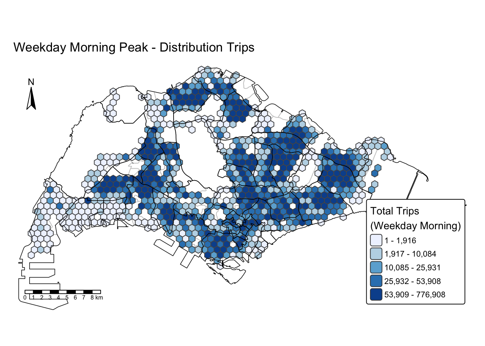
During the weekday afternoon peak (4–9 p.m.), the range of travel activities expands and the overall intensity increases. However, trip volumes within the main residential areas decline, showing a reverse commuting flow. Industrial and employment zones in the western part of the island experience a noticeable rise in trip activity compared with the morning period. The total number of trips during this period reaches 32,955,657, about 11% higher than the 29,662,276 recorded in the morning peak, indicating stronger travel demand in the evening hours.
# Afternoon
tm_shape(mpsz) +
tm_polygons(col = "white", border.col = "grey80") +
tm_shape(weekday_afternoon_peak) +
tm_polygons(
fill = "TRIPS",
fill.scale = tm_scale_intervals(
breaks = common_breaks,
values = "Blues"
),
fill.legend = tm_legend(
title = "Total Trips\n(Weekday Afternoon)",
position = tm_pos_in("right", "bottom")
)
) +
tm_borders(col = "grey40", lwd = 0.4) +
tm_layout(bg.color = "white", frame = FALSE, legend.outside = TRUE, title.size = 1.1) +
tm_title("Weekday Afternoon Peak - Distribution Trips") +
tm_compass(position = tm_pos_in("left", "top")) +
tm_scale_bar(position = tm_pos_in("left", "bottom"))+ REGION_BORDER_LAYER
During weekends and public holidays (11 a.m.–8 p.m.), total trip volumes drop significantly to 20,844,707, showing a clear reduction compared with weekdays. High trip densities are more scattered, with concentrations around major commercial and leisure destinations such as Marina Bay, Orchard Road, Bugis, and Jurong East. These patterns reflect travel primarily for shopping, leisure, and social visits rather than work-related commuting. Unlike weekdays, the city center remains active but surrounding residential areas show relatively stronger activity, illustrating a “decentralized” travel structure typical of weekend mobility.
# Weekend/Holiday
tm_shape(mpsz) +
tm_polygons(col = "white", border.col = "grey80") +
tm_shape(weekend_period) +
tm_polygons(
fill = "TRIPS",
fill.scale = tm_scale_intervals(
breaks = common_breaks,
values = "Blues"
),
fill.legend = tm_legend(
title = "Total Trips\n(Weekend/Holiday)",
position = tm_pos_in("right", "bottom")
)
) +
tm_borders(col = "grey40", lwd = 0.4) +
tm_layout(bg.color = "white", frame = FALSE, legend.outside = TRUE, title.size = 1.1) +
tm_title("Weekend/Holiday Period - Distribution Trips") +
tm_compass(position = tm_pos_in("left", "top")) +
tm_scale_bar(position = tm_pos_in("left", "bottom"))+ REGION_BORDER_LAYER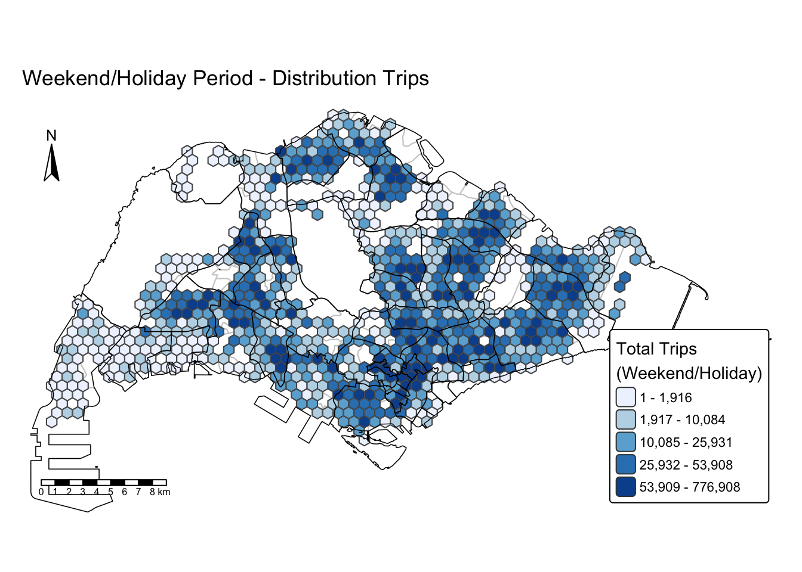
total_morning <- sum(weekday_morning_peak$TRIPS, na.rm = TRUE)
total_afternoon <- sum(weekday_afternoon_peak$TRIPS, na.rm = TRUE)
total_weekend <- sum(weekend_period$TRIPS, na.rm = TRUE)
total_trips_summary <- tibble(
Period = c("Weekday Morning Peak", "Weekday Afternoon Peak", "Weekend/Holiday"),
Total_Trips = c(total_morning, total_afternoon, total_weekend)
)
print(total_trips_summary)# A tibble: 3 × 2
Period Total_Trips
<chr> <dbl>
1 Weekday Morning Peak 29662276
2 Weekday Afternoon Peak 32955657
3 Weekend/Holiday 20844707This section prepares spatial and temporal datasets for Local Moran’s I analysis of bus trip intensity across different time periods.
First, all hexagons are organized and spatial neighborhood relationships are defined using distance-based weights derived from a critical threshold.
A helper function .make_period_sf() then aggregates total trips within each hexagon for specific time windows — weekday morning (5–10 a.m.), weekday afternoon (4–9 p.m.), and weekends/holidays (11 a.m.–8 p.m.) — ensuring that hexagons with no trips are assigned zero values.
After creating these three period-specific spatial datasets, all trip counts are combined to compute unified quantile-based class breaks for consistent map visualization.
Finally, spatial weights and neighborhood structures are applied to each period, and Local Moran’s I statistics are calculated (with 99 simulations) to identify spatial clusters and outliers of trip activity across the different time frames.
hex_all <- hexagon %>% arrange(HEX_ID)
hex_keys <- hex_all %>% st_drop_geometry() %>% dplyr::select(HEX_ID)
critical_dist_all <- critical_threshold(st_geometry(hex_all))
nb_all <- st_dist_band(st_geometry(hex_all), upper = critical_dist_all)
wt_all <- st_weights(nb_all, style = "W", allow_zero = TRUE)
nb_use <- nb_all
wt_use <- wt_all
critical_dist_use <- critical_dist_all
.make_period_sf <- function(trips_tbl, hour_vec, day_type) {
trips_tbl %>%
dplyr::filter(DAY_TYPE == day_type, HOUR_OF_DAY %in% hour_vec) %>%
dplyr::group_by(HEX_ID) %>%
dplyr::summarise(TRIPS = sum(TRIPS), .groups = "drop") %>%
dplyr::right_join(hex_keys, by = "HEX_ID") %>%
dplyr::mutate(TRIPS = tidyr::replace_na(TRIPS, 0L)) %>%
dplyr::arrange(HEX_ID) %>%
dplyr::left_join(hex_all, by = "HEX_ID") %>%
st_as_sf() %>%
dplyr::select(HEX_ID, TRIPS, geometry)
}
weekday_morning_peak <- .make_period_sf(trips, 5:10, "WEEKDAY")
weekday_afternoon_peak <- .make_period_sf(trips, 16:21, "WEEKDAY")
weekend_period <- .make_period_sf(trips, 11:20, "WEEKENDS/HOLIDAY")
all_trips <- c(weekday_morning_peak$TRIPS,
weekday_afternoon_peak$TRIPS,
weekend_period$TRIPS)
common_breaks <- classInt::classIntervals(all_trips, n = 5, style = "quantile")$brks
common_breaks[1] <- floor(min(all_trips, na.rm = TRUE))
critical_dist_m <- critical_dist_use
critical_dist_a <- critical_dist_use
critical_dist_w <- critical_dist_use
nb_m <- nb_use; wt_m <- wt_use
nb_a <- nb_use; wt_a <- wt_use
nb_w <- nb_use; wt_w <- wt_use
set.seed(1234)
lisa_week_morning <- weekday_morning_peak %>%
dplyr::mutate(local_moran = local_moran(TRIPS, nb_m, wt_m, nsim = 99),
.before = 1) %>%
tidyr::unnest(local_moran)
set.seed(1234)
lisa_week_afternoon <- weekday_afternoon_peak %>%
dplyr::mutate(local_moran = local_moran(TRIPS, nb_a, wt_a, nsim = 99),
.before = 1) %>%
tidyr::unnest(local_moran)
set.seed(1234)
lisa_weekend <- weekend_period %>%
dplyr::mutate(local_moran = local_moran(TRIPS, nb_w, wt_w, nsim = 99),
.before = 1) %>%
tidyr::unnest(local_moran)The computed critical distance of 2,250 meters represents the threshold used to define spatial neighborhood relationships, meaning each hexagon is considered connected to other hexagons within a 2.25 km radius. This ensures spatial connectivity and defines the interaction range for subsequent LISA and spatial autocorrelation analysis.
critical_dist_use[1] 2250This code defines a custom plotting function plot_lisa_sig() that visualizes the spatial distribution of statistically significant Local Moran’s I values. It first filters spatial features (lisa_sf) with p-values below the defined threshold (p_cut = 0.1), retaining only areas showing meaningful spatial autocorrelation. The map is then drawn using tmap: base polygons (mpsz) form the background, while the significant hexagons are filled according to their Local Moran’s I values using a five-class quantile-based blue color scale. The function adds region borders, legend customization, and a main title, producing a clear thematic map highlighting significant spatial clustering patterns.
p_cut <- 0.1
ii_all <- c(lisa_week_morning$ii, lisa_week_afternoon$ii, lisa_weekend$ii)
ii_range <- range(ii_all, na.rm = TRUE)
plot_lisa_sig <- function(lisa_sf, title_txt) {
lisa_sig <- dplyr::filter(lisa_sf, p_ii < p_cut)
tm_shape(mpsz) +
tm_polygons(col = "white", border.col = "grey85") +
tm_shape(lisa_sig) +
tm_polygons(
fill = "ii",
fill.scale = tm_scale_continuous(
values = "Blues",
limits = ii_range
),
fill.legend = tm_legend(
title = "Local Moran's I",
position = tm_pos_in("right", "bottom"),
text.size = 0.6,
title.size = 0.7
)
) +
tm_borders(col = "grey50", lwd = 0.3) +
tm_layout(
bg.color = "white",
frame = FALSE,
legend.outside = FALSE,
main.title = title_txt,
main.title.size = 1
) +
REGION_BORDER_LAYER
}Overall Comparison
Across all three time periods, trip activity consistently demonstrates positive spatial autocorrelation, but the strength and spatial extent of clustering vary significantly. The weekday morning peak shows the strongest and most extensive clustering, highlighting the dominant flow from residential areas to employment zones; the evening peak exhibits weaker and more fragmented clustering, reflecting more diverse travel purposes after work; and weekends show the weakest clustering and the most decentralized pattern, indicating a shift from structured weekday commuting to more flexible, leisure-oriented mobility on non-working days.
During the weekday morning peak, significant clusters of high Local Moran’s I values are mainly concentrated in several residential areas such as Woodlands, Yishun, Ang Mo Kio, Tampines, and Jurong East. These zones exhibit strong local spatial autocorrelation, meaning that areas with high trip volumes are typically surrounded by other high-volume areas, indicating a spatially clustered commuting pattern. Overall, the distribution is relatively widespread and balanced across both north–south and east–west directions of Singapore, reflecting the synchronized commuting flows of residents across the island.
plot_lisa_sig(lisa_week_morning, "Local Moran's I (p < 0.1) - Weekday Morning Peak")
During the weekday afternoon peak, the number of significant Local Moran’s I clusters decreases, and the spatial extent becomes more concentrated than in the morning period. High-value clusters remain visible around the city center and its surrounding zones, extending slightly toward the western industrial corridor and northeastern residential districts. Compared with the morning peak, spatial clustering weakens, suggesting that residents’ travel purposes become more diverse, including homeward commuting as well as leisure and social activities.
plot_lisa_sig(lisa_week_afternoon, "Local Moran's I (p < 0.1) - Weekday Afternoon Peak")
During weekends and holidays, significant clusters of high Local Moran’s I values reappear across the island, though their overall intensity is notably weaker than during weekdays. The spatial pattern becomes decentralized, with clusters mainly found around central commercial areas and major leisure hubs such as Marina Bay, Orchard, Bugis, Jurong East, and Tampines. This reflects a predominance of non-commuting trips such as shopping, recreation, and social visits. Although certain local clusters remain, overall spatial autocorrelation is lower, indicating that weekend travel behavior is more varied and dispersed.
plot_lisa_sig(lisa_weekend, "Local Moran's I (p < 0.1) - Weekend/Holiday Period")
This code below defines a function make_moran_plots() that generates a combined visualization consisting of a standardized Moran scatterplot and a LISA quadrant bar chart. It standardizes trip counts and their spatial lags, classifies observations into four LISA quadrants, and visualizes both the spatial autocorrelation pattern and the distribution of each cluster type for different time periods (morning peak, afternoon peak, and weekend).
quad_levels <- c("High-High","Low-Low","High-Low","Low-High")
pal_quads <- c(
"High-High" = "red",
"Low-Low" = "blue",
"High-Low" = "pink",
"Low-High" = "lightblue"
)
make_moran_plots <- function(lisa_df, nb, wt, main_title) {
df <- lisa_df %>%
mutate(lag_TRIPS = st_lag(TRIPS, nb, wt), .before = 1) %>%
tidyr::unnest(lag_TRIPS) %>%
mutate(
z_TRIPS = as.numeric(scale(TRIPS)),
z_lag_TRIPS = as.numeric(scale(lag_TRIPS)),
mean = factor(mean, levels = quad_levels)
)
p_scatter <- ggplot(df, aes(x = z_TRIPS, y = z_lag_TRIPS, color = mean)) +
geom_point(size = 2.8, alpha = 0.9) +
geom_smooth(method = "lm", se = FALSE, color = "black", linewidth = 0.9) +
geom_hline(yintercept = mean(df$z_lag_TRIPS, na.rm = TRUE), lty = 2) +
geom_vline(xintercept = mean(df$z_TRIPS, na.rm = TRUE), lty = 2) +
scale_color_manual(values = pal_quads, drop = FALSE) +
labs(
x = "Standardised TRIPS",
y = "Standardised Spatial Lag of TRIPS",
title = main_title,
color = "Quadrant"
) +
theme_minimal(base_size = 12) +
theme(
plot.title = element_text(size = 13, face = "bold")
)
counts <- df %>%
filter(!is.na(mean)) %>%
count(mean, name = "n") %>%
complete(mean = factor(quad_levels, levels = quad_levels), fill = list(n = 0))
p_bar <- ggplot(counts, aes(x = mean, y = n, fill = mean)) +
geom_col(width = 0.7) +
geom_text(aes(label = n), vjust = -0.35, size = 3) +
scale_fill_manual(values = pal_quads, drop = FALSE) +
labs(x = NULL, y = "Count") +
theme_minimal(base_size = 12) +
theme(
legend.position = "none",
axis.text.x = element_text(angle = 40, hjust = 1)
)
combined <- (p_scatter + p_bar +
plot_layout(widths = c(3.8, 1.8), guides = "collect")) &
theme(legend.position = "right")
return(combined)
}
p_morning <- make_moran_plots(
lisa_df = lisa_week_morning,
nb = nb_m,
wt = wt_m,
main_title = "Standardised Moran Scatterplot with LISA Quadrants - Weekday Morning Peak"
)
p_afternoon <- make_moran_plots(
lisa_df = lisa_week_afternoon,
nb = nb_a,
wt = wt_a,
main_title = "Standardised Moran Scatterplot with LISA Quadrants - Weekday Afternoon Peak"
)
p_weekend <- make_moran_plots(
lisa_df = lisa_weekend,
nb = nb_w,
wt = wt_w,
main_title = "Standardised Moran Scatterplot with LISA Quadrants - Weekend/Holiday Period"
)From the three LISA scatterplots, it is evident that all time periods exhibit significant positive spatial autocorrelation, but the strength gradually decreases over time — strongest in the morning peak, moderate in the evening peak, and weakest during weekends. Specifically, during the weekday morning peak, there are 251 High-High areas and 314 Low-Low areas, together forming the majority, indicating a high level of spatial concentration and stability in commuting trips. In the weekday afternoon peak, the number of High-High areas decreases to 207, and Low-Low areas slightly decline to 302, while Low-High areas increase to 270, reflecting the emergence of high-trip hotspots around previously low-activity zones — a sign of diversification and spatial dispersion of travel patterns. During the weekend and holiday period, High-High areas further decrease to 237, Low-Low areas remain around 315, and Low-High areas stay relatively high at 242, suggesting that spatial correlation in trip intensity has weakened, and travel behavior has become more individualized and random.
p_morning
p_afternoon
p_weekend
Overall Comparison
Overall, Singapore’s spatial mobility pattern evolves from highly synchronized and directional commuting flows (morning peak) to localized and diversified travel behaviors (weekend). Notably, Jurong East and Tampines consistently appear as significant High–High clusters across all periods, highlighting their dual roles as both residential and commercial hubs. Conversely, the persistent Low–Low zones in the west and north reveal spatial inertia in travel activity, providing important insights for transport resource redistribution and public transit service optimization.
During the weekday morning peak, High–High clusters are widely distributed across major residential areas such as Woodlands, Yishun, Ang Mo Kio, and Tampines, reflecting synchronized outbound commuting from housing estates. In contrast, Low–Low clusters are mainly concentrated in the western industrial corridor and port areas, indicating limited morning travel activity.
lisa_week_sig <- lisa_week_morning %>%
filter(p_ii < 0.1)
tm_shape(mpsz) +
tm_polygons(col = "grey90", border.col = "white") +
tm_shape(lisa_week_sig) +
tm_polygons(
fill = "mean",
fill.scale = tm_scale_categorical(values = c(
"High-High" = "#E41A1C",
"Low-Low" = "#377EB8",
"Low-High" = "#9ECAE1",
"High-Low" = "#FCAE91"
)),
fill.legend = tm_legend(
title = "LISA Quadrants (p < 0.1)",
position = tm_pos_in("right", "bottom")
)
) +
tm_borders(col = "grey50", lwd = 0.4) +
tm_layout(bg.color = "white", frame = FALSE) +
tm_title("LISA Map – Weekday Morning Peak") +
REGION_BORDER_LAYER
During the weekday afternoon peak, High–High clusters become more concentrated in and around the city center (Downtown Core, Kallang, Geylang) and extend toward Jurong East and Tampines, capturing the evening return flows toward residential and leisure destinations. Low–Low clusters remain in industrial and peripheral areas but show weakened spatial continuity.
lisa_week_a_sig <- lisa_week_afternoon %>%
filter(p_ii < 0.1)
tm_shape(mpsz) +
tm_polygons(col = "grey90", border.col = "white") +
tm_shape(lisa_week_a_sig) +
tm_polygons(
fill = "mean",
fill.scale = tm_scale_categorical(values = c(
"High-High" = "#E41A1C",
"Low-Low" = "#377EB8",
"Low-High" = "#9ECAE1",
"High-Low" = "#FCAE91"
)),
fill.legend = tm_legend(
title = "LISA Quadrants (p < 0.1)",
position = tm_pos_in("right", "bottom")
)
) +
tm_borders(col = "grey50", lwd = 0.4) +
tm_layout(bg.color = "white", frame = FALSE) +
tm_title("LISA Map – Weekday Afternoon Peak") +
REGION_BORDER_LAYER
During weekends and holidays, High–High clusters expand noticeably across the central and eastern regions, including Marina Bay, Orchard, Bugis, Tampines, and Jurong East, indicating a shift toward leisure-, shopping-, and entertainment-oriented travel. Meanwhile, Low–Low clusters persist in the far western and northern regions, suggesting a clear spatial polarization between active urban cores and inactive suburban zones.
lisa_weekend_sig <- lisa_weekend %>%
filter(p_ii < 0.1)
tm_shape(mpsz) +
tm_polygons(col = "grey90", border.col = "white") +
tm_shape(lisa_weekend_sig) +
tm_polygons(
fill = "mean",
fill.scale = tm_scale_categorical(values = c(
"High-High" = "#E41A1C",
"Low-Low" = "#377EB8",
"Low-High" = "#9ECAE1",
"High-Low" = "#FCAE91"
)),
fill.legend = tm_legend(
title = "LISA Quadrants (p < 0.1)",
position = tm_pos_in("right", "bottom")
)
) +
tm_borders(col = "grey50", lwd = 0.4) +
tm_layout(bg.color = "white", frame = FALSE) +
tm_title("LISA Map – Weekend/Holiday Period") +
REGION_BORDER_LAYER
nb_g <- include_self(nb_use)
wt_g <- st_weights(nb_g, style = "W", allow_zero = TRUE)
get_gi_values <- function(sf_df) {
set.seed(1234)
tmp <- sf_df %>%
mutate(gistar = local_gstar_perm(TRIPS, nb_g, wt_g, nsim = 99), .before = 1) %>%
tidyr::unnest(gistar)
return(tmp$gi_star)
}
gi_all <- c(get_gi_values(weekday_morning_peak),
get_gi_values(weekday_afternoon_peak),
get_gi_values(weekend_period))
gi_range <- range(gi_all, na.rm = TRUE)During the weekday morning peak, the Local Gi* map reveals a clear spatial clustering pattern of travel activity across Singapore. Areas with Gi* > 0 are mainly distributed in the northern and eastern regions, including Tampines, Woodlands, and Jurong East, indicating strong concentrations of commuting flows and higher travel intensity during this period. In contrast, areas with Gi* < 0 are primarily found in the western industrial zones and around Changi Airport, suggesting relatively lower travel activity in these regions during the morning peak. In the significance map (p < 0.1), only part of these clusters pass the statistical significance test, yet the results generally validate the spatial patterns observed in the Gi* visualization.
set.seed(1234)
HCSA_fdw_m <- weekday_morning_peak %>%
mutate(gistar = local_gstar_perm(TRIPS, nb_g, wt_g, nsim = 99), .before = 1) %>%
tidyr::unnest(gistar)
Gi_star_map <- tm_shape(mpsz) +
tm_polygons(col = "white", border.col = "grey85") +
tm_shape(HCSA_fdw_m) +
tm_polygons(
fill = "gi_star",
fill.scale = tm_scale_continuous(values = "brewer.RdBu", limits = gi_range),
fill.legend = tm_legend(
title = "Local Gi*",
position = tm_pos_in("right", "bottom"),
text.size = 0.6, title.size = 0.7
)
) +
tm_borders(col = "grey60", lwd = 0.3) +
tm_layout(
bg.color = "white", frame = FALSE, legend.outside = FALSE,
main.title = "Weekday Morning Peak - Local Gi* of TRIPS",
main.title.size = 1.1, main.title.color = "grey20"
)
p_values_map <- tm_shape(mpsz) +
tm_polygons(col = "white", border.col = "grey85") +
tm_shape(HCSA_fdw_m %>% filter(p_sim < 0.1)) +
tm_polygons(
fill = "p_sim",
fill.scale = tm_scale_intervals(
breaks = c(0, 0.001, 0.01, 0.05, 0.1),
values = "Purples"
),
fill.legend = tm_legend(
title = "p-value (p < 0.1)",
position = tm_pos_in("right", "bottom"),
text.size = 0.6, title.size = 0.7
)
) +
tm_borders(col = "grey60", lwd = 0.3) +
tm_layout(
bg.color = "white", frame = FALSE, legend.outside = FALSE,
main.title = "Weekday Morning Peak - Significant Gi* (p < 0.1)",
main.title.size = 1.1, main.title.color = "grey20"
)
tmap_arrange(Gi_star_map, p_values_map, ncol = 2, asp = 0.95)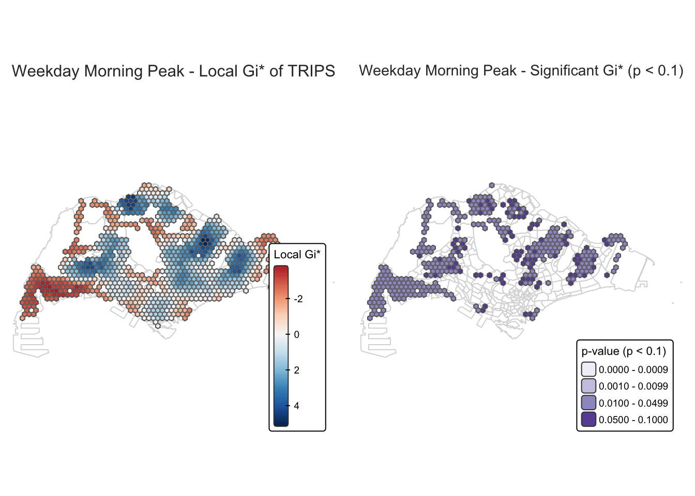
During the weekday afternoon peak, the Local Gi* map reveals a spatial distribution of travel activity that differs from the morning pattern. Areas with Gi* > 0 are mainly concentrated along the southern and eastern corridors, including the Central Business District (CBD), Jurong East, and Changi, indicating that these zones serve as major destinations during the evening peak, reflecting a strong “commuting return flow” effect. In contrast, areas with Gi* < 0 are primarily located in the northern and residential regions, such as Yishun and Woodlands, suggesting relatively sparse travel activity during this period.
The significance map (p < 0.1) further confirms these spatial trends, showing that statistically significant clusters are mainly concentrated within the central and eastern economic corridors, including the city center, Marina Bay, and the Changi corridor. This indicates that peak-hour travel intensity in these zones is not random but statistically robust. In contrast, most cells in the western and northern areas do not reach statistical significance, implying a more dispersed and unstable spatial pattern of travel activity. Overall, the afternoon peak reflects a reverse commuting flow, with residents moving from workplaces back to residential areas — forming a spatial pattern that mirrors the morning peak.
set.seed(1234)
HCSA_fdw_a <- weekday_afternoon_peak %>%
mutate(gistar = local_gstar_perm(TRIPS, nb_g, wt_g, nsim = 99), .before = 1) %>%
tidyr::unnest(gistar)
Gi_star_map_a <- tm_shape(mpsz) +
tm_polygons(col = "white", border.col = "grey85") +
tm_shape(HCSA_fdw_a) +
tm_polygons(
fill = "gi_star",
fill.scale = tm_scale_continuous(values = "brewer.RdBu", limits = gi_range),
fill.legend = tm_legend(
title = "Local Gi*",
position = tm_pos_in("right", "bottom"),
text.size = 0.6, title.size = 0.7
)
) +
tm_borders(col = "grey60", lwd = 0.3) +
tm_layout(
bg.color = "white", frame = FALSE, legend.outside = FALSE,
main.title = "Weekday Afternoon Peak - Local Gi* of TRIPS",
main.title.size = 1.1, main.title.color = "grey20"
)
p_values_map_a <- tm_shape(mpsz) +
tm_polygons(col = "white", border.col = "grey85") +
tm_shape(HCSA_fdw_a %>% filter(p_sim < 0.1)) +
tm_polygons(
fill = "p_sim",
fill.scale = tm_scale_intervals(
breaks = c(0, 0.001, 0.01, 0.05, 0.1),
values = "Purples"
),
fill.legend = tm_legend(
title = "p-value (p < 0.1)",
position = tm_pos_in("right", "bottom"),
text.size = 0.6, title.size = 0.7
)
) +
tm_borders(col = "grey60", lwd = 0.3) +
tm_layout(
bg.color = "white", frame = FALSE, legend.outside = FALSE,
main.title = "Weekday Afternoon Peak - Significant Gi* (p < 0.1)",
main.title.size = 1.1, main.title.color = "grey20"
)
tmap_arrange(Gi_star_map_a, p_values_map_a, ncol = 2, asp = 0.95)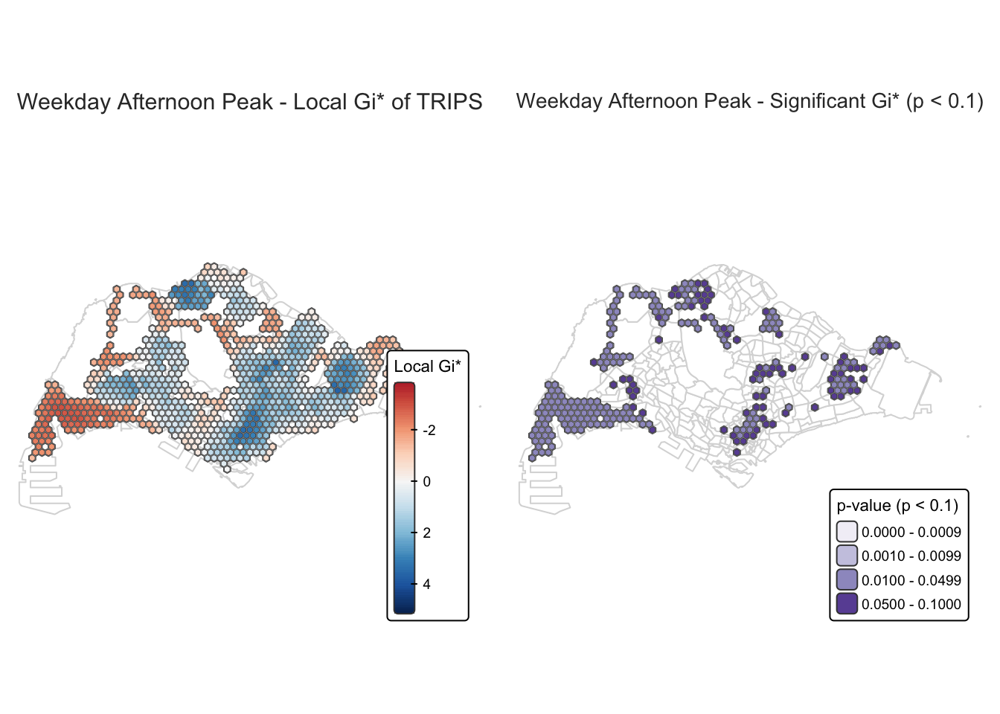
During weekends and public holidays, the Local Gi* map reveals a notable shift in the spatial clustering of travel activities across Singapore. Unlike the weekday commuting-oriented pattern, areas with Gi* > 0 are primarily concentrated in the southern and central core zones, including Marina Bay, Orchard, and Changi. These regions attract substantial leisure, shopping, and tourism-related travel during weekends, forming a typical “destination-oriented clustering” pattern. In contrast, the western and northern areas—such as the Jurong Industrial Area, Woodlands, and Yishun—exhibit Gi* < 0, indicating relatively sparse travel activity in zones dominated by industrial or residential functions. The significance map (p < 0.1) further confirms this spatial pattern, showing that significant clusters are mainly concentrated in the central and southeastern regions, while most grid cells in the west and north fail to reach statistical significance, implying a more dispersed and random distribution of travel activity.
set.seed(1234)
HCSA_fdw_w <- weekend_period %>%
mutate(gistar = local_gstar_perm(TRIPS, nb_g, wt_g, nsim = 99), .before = 1) %>%
tidyr::unnest(gistar)
Gi_star_map_w <- tm_shape(mpsz) +
tm_polygons(col = "white", border.col = "grey85") +
tm_shape(HCSA_fdw_w) +
tm_polygons(
fill = "gi_star",
fill.scale = tm_scale_continuous(values = "brewer.RdBu", limits = gi_range),
fill.legend = tm_legend(
title = "Local Gi*",
position = tm_pos_in("right", "bottom"),
text.size = 0.6, title.size = 0.7
)
) +
tm_borders(col = "grey60", lwd = 0.3) +
tm_layout(
bg.color = "white", frame = FALSE, legend.outside = FALSE,
main.title = "Weekend/Holiday - Local Gi* of TRIPS",
main.title.size = 1.1, main.title.color = "grey20"
)
p_values_map_w <- tm_shape(mpsz) +
tm_polygons(col = "white", border.col = "grey85") +
tm_shape(HCSA_fdw_w %>% filter(p_sim < 0.1)) +
tm_polygons(
fill = "p_sim",
fill.scale = tm_scale_intervals(
breaks = c(0, 0.001, 0.01, 0.05, 0.1),
values = "Purples"
),
fill.legend = tm_legend(
title = "p-value (p < 0.1)",
position = tm_pos_in("right", "bottom"),
text.size = 0.6, title.size = 0.7
)
) +
tm_borders(col = "grey60", lwd = 0.3) +
tm_layout(
bg.color = "white", frame = FALSE, legend.outside = FALSE,
main.title = "Weekend/Holiday - Significant Gi* (p < 0.1)",
main.title.size = 1.1, main.title.color = "grey20"
)
tmap_arrange(Gi_star_map_w, p_values_map_w, ncol = 2, asp = 0.95)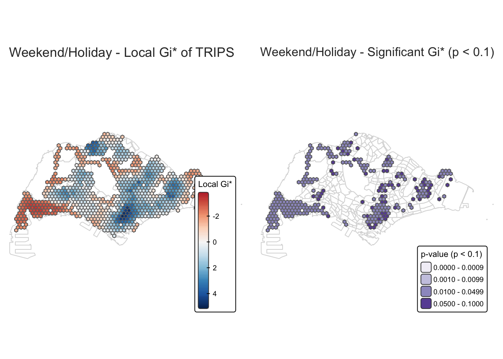
The HCSA cluster map integrates both the Gi* statistics and their significance levels, clearly identifying the distribution of hot and cold spots at the 90% confidence level. The red “Hot Spot” areas are mainly located in mixed residential and commercial zones such as Tampines, Ang Mo Kio, Yishun, and Jurong East, reflecting their role as major origins and hubs of commuting activity during the morning peak. The blue “Cold Spot” areas are concentrated in the western industrial corridor (e.g., Jurong Industrial Area) and northern peripheral zones, indicating relatively low trip densities and limited commuting demand. The gray “Insignificant” regions represent areas with average travel intensity, where no significant clustering is observed.
HCSA_fdw_m <- HCSA_fdw_m %>%
mutate(
HCSA_cluster = case_when(
p_sim > 0.1 ~ "Insignificant",
p_sim <= 0.1 & cluster == "High" ~ "Hot spot",
p_sim <= 0.1 & cluster == "Low" ~ "Cold spot",
TRUE ~ "Other"
),
HCSA_cluster = factor(HCSA_cluster,
levels = c("Insignificant", "Hot spot", "Cold spot")),
.before = 1
)
HCSA_map_m <- tm_shape(mpsz) +
tm_polygons(col = "white", border.col = "grey85") +
tm_shape(HCSA_fdw_m) +
tm_polygons(
fill = "HCSA_cluster",
fill.scale = tm_scale_categorical(values = c(
"Insignificant" = "grey80",
"Hot spot" = "#E41A1C",
"Cold spot" = "#377EB8"
)),
fill.legend = tm_legend(
title = "HCSA Cluster\n(p < 0.1)",
position = tm_pos_in("right", "bottom"),
text.size = 0.7,
title.size = 0.8
)
) +
tm_borders(col = "grey60", lwd = 0.3) +
tm_layout(
bg.color = "white",
frame = FALSE,
legend.outside = FALSE,
main.title = "Weekday Morning Peak - HCSA Clusters (p < 0.1)",
main.title.size = 1.1,
main.title.color = "grey20"
)
HCSA_map_m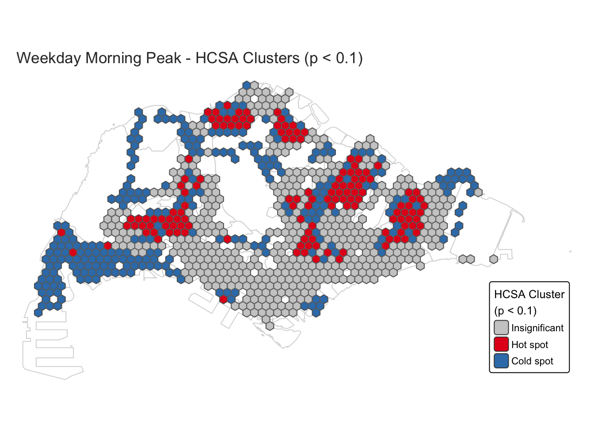
The HCSA cluster map, based on a 90% confidence interval, further integrates the Gi* statistic and its significance level to reveal the spatial distribution of hot and cold spots during the evening peak. The red “Hot Spot” areas are mainly located in the CBD, Marina Bay, Kallang–Geylang, and the Changi Airport area, highlighting their roles as dominant travel destinations during the evening commute. The blue “Cold Spot” regions are concentrated along the western industrial corridor (e.g., Jurong Industrial Area) and northern residential districts, indicating relatively lower travel activity in these areas.
HCSA_fdw_a <- HCSA_fdw_a %>%
mutate(
HCSA_cluster = case_when(
p_sim > 0.1 & !is.na(p_sim) ~ "Insignificant",
p_sim <= 0.1 & cluster == "High" ~ "Hot spot",
p_sim <= 0.1 & cluster == "Low" ~ "Cold spot",
TRUE ~ "Other"
),
HCSA_cluster = factor(HCSA_cluster,
levels = c("Insignificant", "Hot spot", "Cold spot")),
.before = 1
)
HCSA_map_a <- tm_shape(mpsz) +
tm_polygons(col = "white", border.col = "grey85") +
tm_shape(HCSA_fdw_a) +
tm_polygons(
fill = "HCSA_cluster",
fill.scale = tm_scale_categorical(values = c(
"Insignificant" = "grey80",
"Hot spot" = "#E41A1C",
"Cold spot" = "#377EB8"
)),
fill.legend = tm_legend(
title = "HCSA Cluster\n(p < 0.1)",
position = tm_pos_in("right", "bottom"),
text.size = 0.7,
title.size = 0.8
)
) +
tm_borders(col = "grey60", lwd = 0.3) +
tm_layout(
bg.color = "white",
frame = FALSE,
legend.outside = FALSE,
main.title = "Weekday Afternoon Peak - HCSA Clusters (p < 0.1)",
main.title.size = 1.1,
main.title.color = "grey20"
)
HCSA_map_a
The HCSA cluster map, constructed under a 90% confidence interval, integrates the Gi* statistic with its significance level to provide a clearer picture of weekend travel hot and cold spots. The red “Hot Spot” areas are concentrated in the commercial core of the city center and scattered across certain residential districts, indicating that these locations serve as major travel destinations on weekends, accommodating substantial leisure, shopping, and sightseeing flows. In contrast, the blue “Cold Spot” regions are mainly found in the western industrial areas and northern residential zones, suggesting weaker travel demand and lower traffic density in these regions during weekends.
HCSA_fdw_w <- HCSA_fdw_w %>%
mutate(
HCSA_cluster = case_when(
p_sim > 0.1 ~ "Insignificant",
p_sim <= 0.1 & cluster == "High" ~ "Hot spot",
p_sim <= 0.1 & cluster == "Low" ~ "Cold spot",
TRUE ~ "Other"
),
HCSA_cluster = factor(HCSA_cluster,
levels = c("Insignificant", "Hot spot", "Cold spot")),
.before = 1
)
HCSA_map_w <- tm_shape(mpsz) +
tm_polygons(col = "white", border.col = "grey85") +
tm_shape(HCSA_fdw_w) +
tm_polygons(
fill = "HCSA_cluster",
fill.scale = tm_scale_categorical(values = c(
"Insignificant" = "grey80",
"Hot spot" = "#E41A1C",
"Cold spot" = "#377EB8"
)),
fill.legend = tm_legend(
title = "HCSA Cluster\n(p < 0.1)",
position = tm_pos_in("right", "bottom"),
text.size = 0.7,
title.size = 0.8
)
) +
tm_borders(col = "grey60", lwd = 0.3) +
tm_layout(
bg.color = "white",
frame = FALSE,
legend.outside = FALSE,
main.title = "Weekend/Holiday - HCSA Clusters (p < 0.1)",
main.title.size = 1.1,
main.title.color = "grey20"
)
HCSA_map_w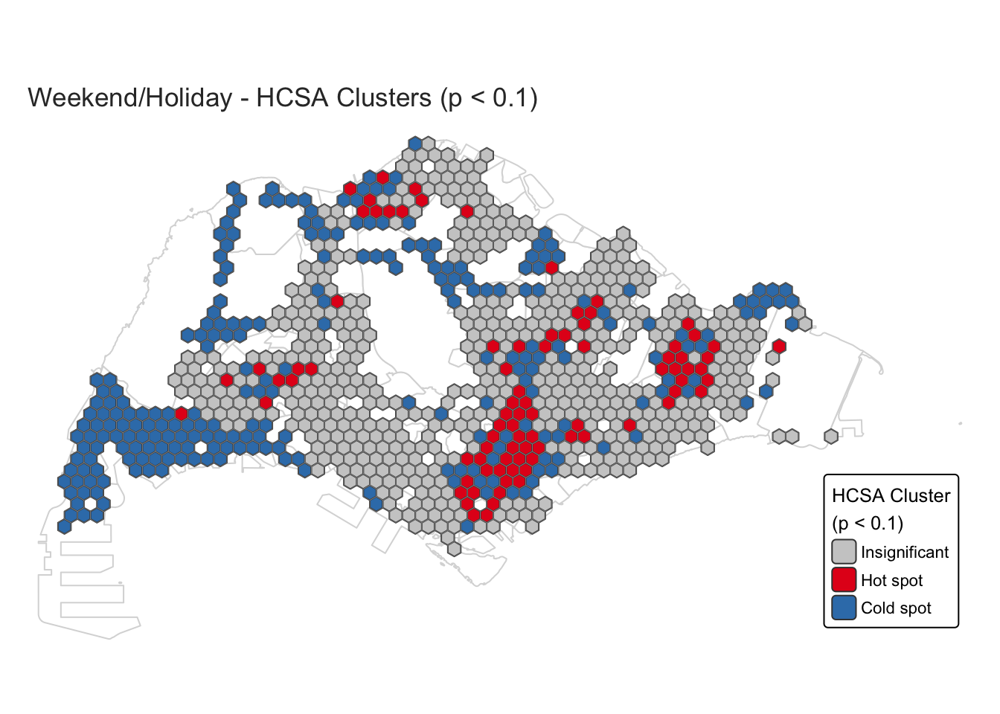
By applying a unified spatial weighting system, the trip data were transformed into space–time cubes across three periods — weekday morning peak, weekday afternoon peak, and weekend/holiday — and the Local Gi* statistic was computed to identify significant spatiotemporal clustering patterns of travel activities. All three space–time cubes returned TRUE during validation, indicating that their structures are complete and suitable for subsequent Emerging Hot Spot Analysis (EHSA).
hex_ids <- hexagon$HEX_ID
trips_week_morning_hourly <- trips %>%
dplyr::filter(DAY_TYPE == "WEEKDAY", HOUR_OF_DAY %in% 5:10) %>%
dplyr::group_by(HEX_ID, HOUR_OF_DAY) %>%
dplyr::summarise(TRIPS = sum(TRIPS), .groups = "drop") %>%
tidyr::complete(HEX_ID = hex_ids, HOUR_OF_DAY = 5:10, fill = list(TRIPS = 0)) %>%
dplyr::arrange(HEX_ID, HOUR_OF_DAY)
trips_week_morning_hourly$HEX_ID <- factor(trips_week_morning_hourly$HEX_ID, levels = hex_ids)
trips_week_morning_hourly$HOUR_OF_DAY <- as.integer(trips_week_morning_hourly$HOUR_OF_DAY)
TRIPS_week_morning_st <- spacetime(
trips_week_morning_hourly,
hexagon %>% dplyr::select(HEX_ID),
.loc_col = "HEX_ID",
.time_col = "HOUR_OF_DAY"
)
is_spacetime_cube(TRIPS_week_morning_st)[1] TRUEnb_g <- include_self(nb_use)
wt_g <- st_weights(nb_g, style = "W", allow_zero = TRUE)
TRIPS_week_morning_nb <- TRIPS_week_morning_st %>%
activate("geometry") %>%
dplyr::mutate(
nb_m = nb_g,
wt_m = wt_g,
.before = 1
) %>%
set_nbs("nb_m") %>%
set_wts("wt_m")
set.seed(1234)
gi_week_morning <- TRIPS_week_morning_nb %>%
dplyr::group_by(HOUR_OF_DAY) %>%
dplyr::mutate(gi_star = local_gstar_perm(TRIPS, nb_m, wt_m, nsim = 99)) %>%
tidyr::unnest(gi_star) %>%
dplyr::ungroup()hex_ids <- hexagon$HEX_ID
trips_week_afternoon_hourly <- trips %>%
dplyr::filter(DAY_TYPE == "WEEKDAY", HOUR_OF_DAY %in% 16:21) %>%
dplyr::group_by(HEX_ID, HOUR_OF_DAY) %>%
dplyr::summarise(TRIPS = sum(TRIPS), .groups = "drop") %>%
tidyr::complete(HEX_ID = hex_ids, HOUR_OF_DAY = 16:21, fill = list(TRIPS = 0)) %>%
dplyr::arrange(HEX_ID, HOUR_OF_DAY)
trips_week_afternoon_hourly$HEX_ID <- factor(trips_week_afternoon_hourly$HEX_ID, levels = hex_ids)
trips_week_afternoon_hourly$HOUR_OF_DAY <- as.integer(trips_week_afternoon_hourly$HOUR_OF_DAY)
TRIPS_week_afternoon_st <- spacetime(
trips_week_afternoon_hourly,
hexagon %>% dplyr::select(HEX_ID),
.loc_col = "HEX_ID",
.time_col = "HOUR_OF_DAY"
)
is_spacetime_cube(TRIPS_week_afternoon_st)[1] TRUETRIPS_week_afternoon_nb <- TRIPS_week_afternoon_st %>%
activate("geometry") %>%
dplyr::mutate(
nb_a = nb_g,
wt_a = wt_g,
.before = 1
) %>%
set_nbs("nb_a") %>%
set_wts("wt_a")
set.seed(1234)
gi_week_afternoon <- TRIPS_week_afternoon_nb %>%
dplyr::group_by(HOUR_OF_DAY) %>%
dplyr::mutate(gi_star = local_gstar_perm(TRIPS, nb_a, wt_a, nsim = 99)) %>%
tidyr::unnest(gi_star) %>%
dplyr::ungroup()hex_ids <- hexagon$HEX_ID
trips_weekend_hourly <- trips %>%
dplyr::filter(DAY_TYPE == "WEEKENDS/HOLIDAY", HOUR_OF_DAY %in% 11:20) %>%
dplyr::group_by(HEX_ID, HOUR_OF_DAY) %>%
dplyr::summarise(TRIPS = sum(TRIPS), .groups = "drop") %>%
tidyr::complete(HEX_ID = hex_ids, HOUR_OF_DAY = 11:20, fill = list(TRIPS = 0)) %>%
dplyr::arrange(HEX_ID, HOUR_OF_DAY)
trips_weekend_hourly$HEX_ID <- factor(trips_weekend_hourly$HEX_ID, levels = hex_ids)
trips_weekend_hourly$HOUR_OF_DAY <- as.integer(trips_weekend_hourly$HOUR_OF_DAY)
TRIPS_weekend_st <- spacetime(
trips_weekend_hourly,
hexagon %>% dplyr::select(HEX_ID),
.loc_col = "HEX_ID",
.time_col = "HOUR_OF_DAY"
)
is_spacetime_cube(TRIPS_weekend_st)[1] TRUETRIPS_weekend_nb <- TRIPS_weekend_st %>%
activate("geometry") %>%
dplyr::mutate(
nb_w = nb_g,
wt_w = wt_g,
.before = 1
) %>%
set_nbs("nb_w") %>%
set_wts("wt_w")
set.seed(1234)
gi_weekend <- TRIPS_weekend_nb %>%
dplyr::group_by(HOUR_OF_DAY) %>%
dplyr::mutate(gi_star = local_gstar_perm(TRIPS, nb_w, wt_w, nsim = 99)) %>%
tidyr::unnest(gi_star) %>%
dplyr::ungroup()H0: No monotonic trend
H1: Monotonic trend is present
We reject H0 (no monotonic trend) and accept H1 (a monotonic trend is present), since all three top hexagons (H0420, H0421, H0434) exhibit = 1.0 with p = 0.0085 < 0.05.
Trend Interpretation: The Gi* trend lines clearly show a strong upward trajectory across morning hours, transitioning from slightly negative values at 5–6 AM to significantly positive peaks by 9–10 AM. This indicates that these locations experienced a rapid intensification of hotspot activity throughout the morning period. The pattern reflects increasing spatial clustering of bus trips toward core commuting hours, consistent with the morning inflow of passengers into business districts or transit hubs.
mk_week_morning <- gi_week_morning %>%
st_drop_geometry() %>%
group_by(HEX_ID) %>%
summarise(
mk = if(n() >= 3) list(unclass(Kendall::MannKendall(gi_star))) else NA,
.groups = "drop"
) %>%
tidyr::unnest_wider(mk) %>%
rename(tau = tau, p_value = sl)
mk_week_morning_ranked <- mk_week_morning %>%
filter(!is.na(p_value)) %>%
arrange(p_value, desc(abs(tau)))
# Top 10 trending hexagons by p-value and tau magnitude
mk_week_morning_ranked %>% slice(1:10)# A tibble: 10 × 6
HEX_ID tau p_value S D varS
<fct> <dbl> <dbl> <dbl> <dbl> <dbl>
1 H0420 1.00 0.00853 15 15.0 28.3
2 H0421 1.00 0.00853 15 15.0 28.3
3 H0434 1.00 0.00853 15 15.0 28.3
4 H0435 1.00 0.00853 15 15.0 28.3
5 H0438 1.00 0.00853 15 15.0 28.3
6 H0447 1.00 0.00853 15 15.0 28.3
7 H0449 1.00 0.00853 15 15.0 28.3
8 H0450 1.00 0.00853 15 15.0 28.3
9 H0451 1.00 0.00853 15 15.0 28.3
10 H0462 1.00 0.00853 15 15.0 28.3ids_m <- c("H0420","H0421","H0434")
ids_a <- c("H0014","H0017","H0023")
ids_w <- c("H0168","H0176","H0195")
make_trend_panel <- function(gi_df, id_vec, title_txt) {
gi_df %>%
st_drop_geometry() %>%
filter(HEX_ID %in% id_vec) %>%
select(HEX_ID, HOUR_OF_DAY, gi_star) %>%
mutate(HEX_ID = as.factor(HEX_ID)) %>%
ggplot(aes(x = HOUR_OF_DAY, y = gi_star)) +
geom_line(linewidth = 0.8) +
geom_point(size = 2) +
geom_hline(yintercept = 0, linetype = 2, linewidth = 0.4) +
facet_wrap(~ HEX_ID, nrow = 1, scales = "free_x") +
labs(title = title_txt, x = "Hour of Day", y = "Gi*") +
theme_light(base_size = 12) +
theme(
plot.title = element_text(face = "bold"),
panel.grid.minor = element_blank()
)
}
p_m <- make_trend_panel(gi_week_morning, ids_m, "Gi* Trends – Weekday Morning Peak (Top 3)")
p_a <- make_trend_panel(gi_week_afternoon, ids_a, "Gi* Trends – Weekday Afternoon Peak (Top 3)")
p_w <- make_trend_panel(gi_weekend, ids_w, "Gi* Trends – Weekend/Holiday (Top 3)")
p_m 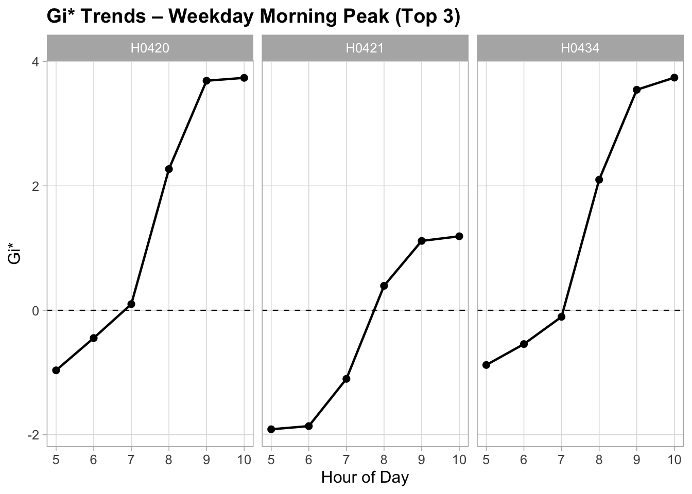
H0: No monotonic trend
H1: Monotonic trend is present
We reject H0 and accept H1, as all three selected hexagons (H0014, H0017, H0023) record = 1.0 with p = 0.0085 < 0.05, confirming a statistically significant monotonic trend.
Trend Interpretation: Unlike the morning case, Gi* values here remain negative but gradually increase from around –3 to about –2 across the 16–21 hour window. This indicates a weakening coldspot trend, suggesting that these zones—likely residential or peripheral areas—saw progressively higher trip volumes toward evening but still below the network average. The trend captures an evening rebound of travel activity as commuters return from central business zones, softening the spatial concentration of low-mobility regions.
mk_week_afternoon <- gi_week_afternoon %>%
st_drop_geometry() %>%
group_by(HEX_ID) %>%
summarise(
mk = if (n() >= 3) list(unclass(Kendall::MannKendall(gi_star))) else NA,
.groups = "drop"
) %>%
tidyr::unnest_wider(mk) %>%
rename(tau = tau, p_value = sl)
mk_week_afternoon_ranked <- mk_week_afternoon %>%
filter(!is.na(p_value)) %>%
arrange(p_value, desc(abs(tau)))
mk_week_afternoon_ranked %>% slice(1:10)# A tibble: 10 × 6
HEX_ID tau p_value S D varS
<fct> <dbl> <dbl> <dbl> <dbl> <dbl>
1 H0014 1.00 0.00853 15 15.0 28.3
2 H0017 1.00 0.00853 15 15.0 28.3
3 H0023 1.00 0.00853 15 15.0 28.3
4 H0028 1.00 0.00853 15 15.0 28.3
5 H0031 1.00 0.00853 15 15.0 28.3
6 H0034 1.00 0.00853 15 15.0 28.3
7 H0037 1.00 0.00853 15 15.0 28.3
8 H0038 1.00 0.00853 15 15.0 28.3
9 H0040 1.00 0.00853 15 15.0 28.3
10 H0041 1.00 0.00853 15 15.0 28.3p_a
H0: No monotonic trend
H1: Monotonic trend is present
We reject H0 and accept H1, given that the top three hexagons (H0168, H0176, H0195) show = -1.0 with extremely small p = 0.000083 < 0.001, indicating a strong negative monotonic trend.
Trend Interpretation: The Gi* trajectories exhibit a consistent downward slope from high positive values (~2.5) toward near-zero by 20 PM, signifying that initially intense hotspot activity in midday gradually dissipates over time. These locations likely correspond to leisure or retail destinations where passenger clustering peaks around lunchtime and early afternoon, then declines as visitors disperse. The strong negative trend captures the temporal decay of recreational mobility after the mid-day peak on weekends.
mk_weekend <- gi_weekend %>%
st_drop_geometry() %>%
group_by(HEX_ID) %>%
summarise(
mk = if (n() >= 3) list(unclass(Kendall::MannKendall(gi_star))) else NA,
.groups = "drop"
) %>%
tidyr::unnest_wider(mk) %>%
rename(tau = tau, p_value = sl)
mk_weekend_ranked <- mk_weekend %>%
filter(!is.na(p_value)) %>%
arrange(p_value, desc(abs(tau)))
mk_weekend_ranked %>% slice(1:10)# A tibble: 10 × 6
HEX_ID tau p_value S D varS
<fct> <dbl> <dbl> <dbl> <dbl> <dbl>
1 H0168 -1 0.0000830 -45 45 125
2 H0176 -1 0.0000830 -45 45 125
3 H0195 -1 0.0000830 -45 45 125
4 H0320 -1 0.0000830 -45 45 125
5 H0378 -1 0.0000830 -45 45 125
6 H0386 -1 0.0000830 -45 45 125
7 H0398 -1 0.0000830 -45 45 125
8 H0408 -1 0.0000830 -45 45 125
9 H0409 -1 0.0000830 -45 45 125
10 H0418 -1 0.0000830 -45 45 125p_w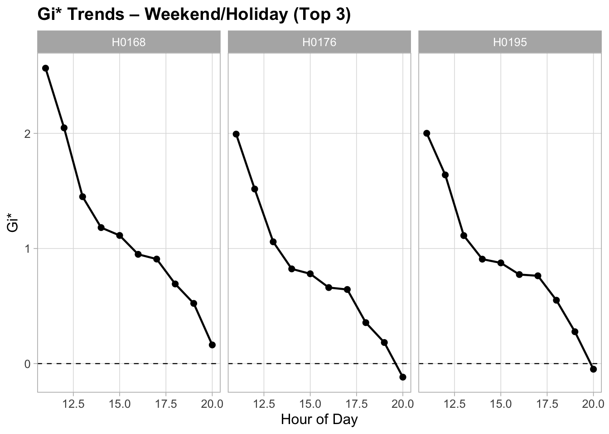
I have defined a customized color scheme to clearly distinguish these categories. Warm colors (such as red and orange) indicate an increase in hotspots, while cool colors (such as blue and cyan) represent the persistence or emergence of cold spots. Grey is used for areas where no significant patterns are detected. This classification and color mapping facilitate the intuitive interpretation of the spatial and temporal evolution of travel activity clustering patterns within Singapore.
ehsa_levels <- c(
"consecutive coldspot", "consecutive hotspot",
"new coldspot", "new hotspot",
"no pattern detected",
"persistent coldspot", "persistent hotspot",
"sporadic coldspot", "sporadic hotspot"
)
ehsa_colors <- c(
"consecutive coldspot" = "#00BFFF",
"consecutive hotspot" = "#FF6347",
"new coldspot" = "#1E90FF",
"new hotspot" = "#FF4500",
"no pattern detected" = "#E0E0E0",
"persistent coldspot" = "#00264D",
"persistent hotspot" = "#8B0000",
"sporadic coldspot" = "#87CEFA",
"sporadic hotspot" = "#FFA500"
)For each time period — weekday morning peak, weekday afternoon peak, and weekend/holiday — the Emerging Hot Spot Analysis (EHSA) was conducted to detect statistically significant spatiotemporal patterns in bus trip intensity. Using the unified spatial weight configuration and 99 Monte Carlo simulations, the local Gi* statistic was computed iteratively across time steps to evaluate whether each hexagonal cell exhibited a consistent increase (hotspot) or decrease (coldspot) in clustering intensity. Hexagons with a significance level of p < 0.1 were retained for visualization and classified according to the EHSA typology.
# weekday morning
set.seed(1234)
ehsa_week_morning <- emerging_hotspot_analysis(
x = TRIPS_week_morning_nb,
.var = "TRIPS",
k = 1,
nsim = 99,
.nb_name = "nb_m",
.wt_name = "wt_m"
)
ehsa_week_morning_sf <- hexagon %>%
dplyr::select(HEX_ID) %>%
dplyr::left_join(ehsa_week_morning, by = c("HEX_ID" = "location")) %>%
dplyr::filter(p_value < 0.1) %>%
sf::st_as_sf()
ehsa_week_morning$classification <- factor(ehsa_week_morning$classification, levels = ehsa_levels)
ehsa_week_morning_sf$classification <- factor(ehsa_week_morning_sf$classification, levels = ehsa_levels)
# weekday afternoon
set.seed(1234)
ehsa_week_afternoon <- emerging_hotspot_analysis(
x = TRIPS_week_afternoon_nb,
.var = "TRIPS",
k = 1,
nsim = 99,
.nb_name = "nb_a",
.wt_name = "wt_a"
)
ehsa_week_afternoon_sf <- hexagon %>%
dplyr::select(HEX_ID) %>%
dplyr::left_join(ehsa_week_afternoon, by = c("HEX_ID" = "location")) %>%
dplyr::filter(p_value < 0.1) %>%
sf::st_as_sf()
ehsa_week_afternoon$classification <- factor(ehsa_week_afternoon$classification, levels = ehsa_levels)
ehsa_week_afternoon_sf$classification <- factor(ehsa_week_afternoon_sf$classification, levels = ehsa_levels)
# weekend
set.seed(1234)
ehsa_weekend <- emerging_hotspot_analysis(
x = TRIPS_weekend_nb,
.var = "TRIPS",
k = 1,
nsim = 99,
.nb_name = "nb_w",
.wt_name = "wt_w"
)
ehsa_weekend_sf <- hexagon %>%
dplyr::select(HEX_ID) %>%
dplyr::left_join(ehsa_weekend, by = c("HEX_ID" = "location")) %>%
dplyr::filter(p_value < 0.1) %>%
sf::st_as_sf()
ehsa_weekend$classification <- factor(ehsa_weekend$classification, levels = ehsa_levels)
ehsa_weekend_sf$classification <- factor(ehsa_weekend_sf$classification, levels = ehsa_levels)During the weekday morning peak, most hexagonal zones are classified as no pattern detected, while the proportions of sporadic coldspots and sporadic hotspots are also relatively high. This indicates that although overall travel intensity across the city remains stable, certain localized areas still experience temporary clustering of high or low travel activity.
ggplot(data = ehsa_week_morning,
aes(x = classification, fill = classification)) +
geom_bar(color = "black", alpha = 0.9) +
scale_fill_manual(values = ehsa_colors) +
labs(
title = "Distribution of EHSA Classes – Weekday Morning Peak (5–10)",
x = "EHSA Classification",
y = "Number of Hexagons"
) +
theme_minimal() +
theme(
axis.text.x = element_text(angle = 45, hjust = 1),
plot.title = element_text(face = "bold", size = 14)
)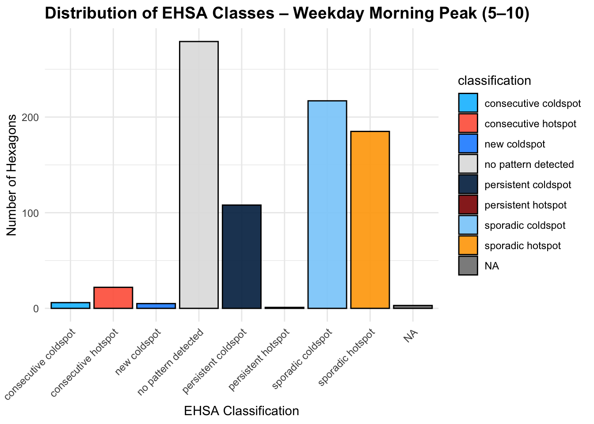
During the weekday afternoon peak, no pattern detected continues to dominate the EHSA classification, followed by smaller proportions of persistent coldspots, sporadic hotspots, and sporadic coldspots. This suggests that evening travel exhibits weaker spatial clustering, with less directional flow compared to the morning peak, and that travel patterns are more dispersed across multiple destinations.
ggplot(data = ehsa_week_afternoon,
aes(x = classification, fill = classification)) +
geom_bar(color = "black", alpha = 0.9) +
scale_fill_manual(values = ehsa_colors) +
labs(
title = "Distribution of EHSA Classes – Weekday Afternoon Peak (16–21)",
x = "EHSA Classification",
y = "Number of Hexagons"
) +
theme_minimal() +
theme(
axis.text.x = element_text(angle = 45, hjust = 1),
plot.title = element_text(face = "bold", size = 14)
)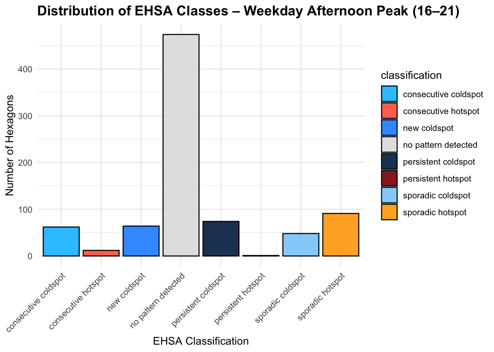
During weekends and holidays, the EHSA results show that no pattern detected remains the dominant class, while persistent coldspots occupy a higher proportion, indicating that travel demand remains consistently low in industrial or purely residential zones. However, the comparable numbers of sporadic hotspots and sporadic coldspots reflect a more diverse and localized mobility pattern during weekends, largely driven by leisure, shopping, and tourism-related activities.
ggplot(data = ehsa_weekend,
aes(x = classification, fill = classification)) +
geom_bar(color = "black", alpha = 0.9) +
scale_fill_manual(values = ehsa_colors) +
labs(
title = "Distribution of EHSA Classes – Weekend/Holiday",
x = "EHSA Classification",
y = "Number of Hexagons"
) +
theme_minimal() +
theme(
axis.text.x = element_text(angle = 45, hjust = 1),
plot.title = element_text(face = "bold", size = 14)
)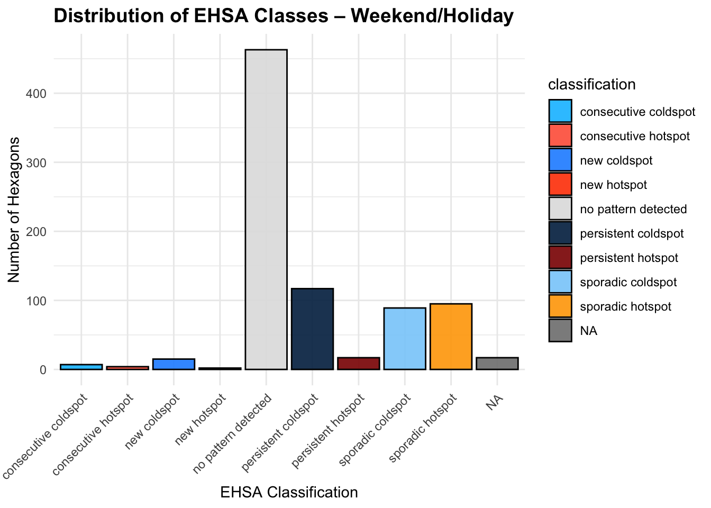
During the weekday morning peak, persistent coldspots are primarily located in the western industrial zones, consistent with their land-use characteristics and limited early-morning travel demand. Sporadic hotspots are mainly concentrated in the eastern and southern regions, reflecting areas of higher commuter inflow. Consecutive coldspots are scattered across the island but show a slight clustering tendency around the Central Business District (CBD).
tm_shape(mpsz) + tm_polygons(col = "grey90", border.col = "white") +
tm_shape(ehsa_week_morning_sf) +
tm_polygons(
fill = "classification",
fill.scale = tm_scale_categorical(values = ehsa_colors),
fill.legend = tm_legend(
title = "EHSA Classification",
position = tm_pos_in("right", "bottom"))
) +
tm_borders(col = "grey50", lwd = 0.5) +
tm_title("Emerging Hot Spot Analysis (EHSA) – Weekday Morning Peak (5–10)") +
tm_layout(bg.color = "white", frame = FALSE, legend.outside = TRUE)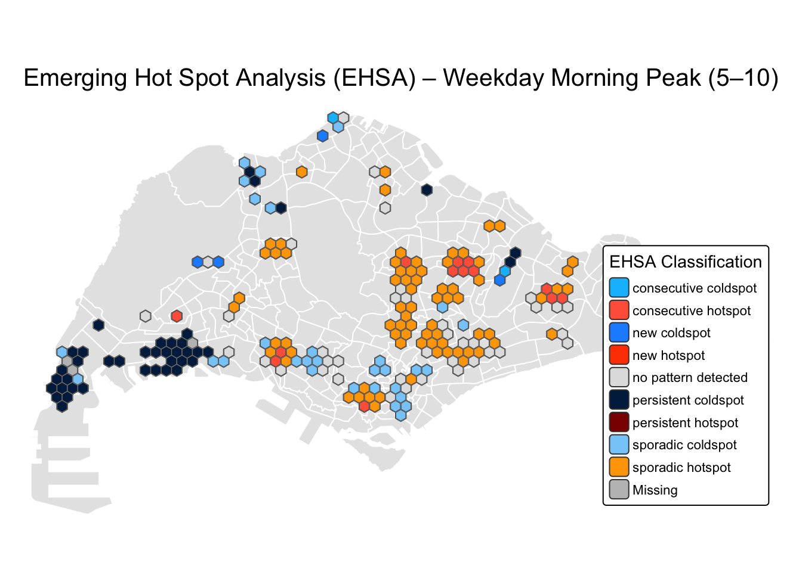
During the weekday afternoon peak, the number of significant hexagons decreases noticeably, dominated by new hotspots and sporadic hotspots. These clusters are mainly concentrated in the CBD, Woodlands, Jurong East, and Tampines. This pattern likely reflects post-work commuting flows, as employees from nearby industrial areas are transported to these key interchange hubs, where they board buses to return home.
tm_shape(mpsz) + tm_polygons(col = "grey90", border.col = "white") +
tm_shape(ehsa_week_afternoon_sf) +
tm_polygons(
fill = "classification",
fill.scale = tm_scale_categorical(values = ehsa_colors),
fill.legend = tm_legend(
title = "EHSA Classification",
position = tm_pos_in("right", "bottom"))
) +
tm_borders(col = "grey50", lwd = 0.5) +
tm_title("Emerging Hot Spot Analysis (EHSA) – Weekday Afternoon Peak (16–21)") +
tm_layout(bg.color = "white", frame = FALSE, legend.outside = TRUE)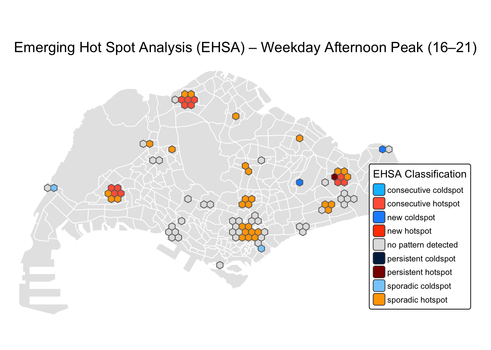
During the weekend and holiday period, the longer observation window results in a substantial increase in significant hexagons. Persistent coldspots remain concentrated in the western industrial districts, while consecutive coldspots appear along the checkpoints to Malaysia and the western coastal areas. Sporadic hotspots are widely distributed across major commercial zones, while most other parts of the island are classified as no pattern detected, indicating relatively stable or neutral travel activity.
tm_shape(mpsz) + tm_polygons(col = "grey90", border.col = "white") +
tm_shape(ehsa_weekend_sf) +
tm_polygons(
fill = "classification",
fill.scale = tm_scale_categorical(values = ehsa_colors),
fill.legend = tm_legend(
title = "EHSA Classification",
position = tm_pos_in("right", "bottom"))
) +
tm_borders(col = "grey50", lwd = 0.5) +
tm_title("Emerging Hot Spot Analysis (EHSA) – Weekend/Holiday") +
tm_layout(bg.color = "white", frame = FALSE, legend.outside = TRUE)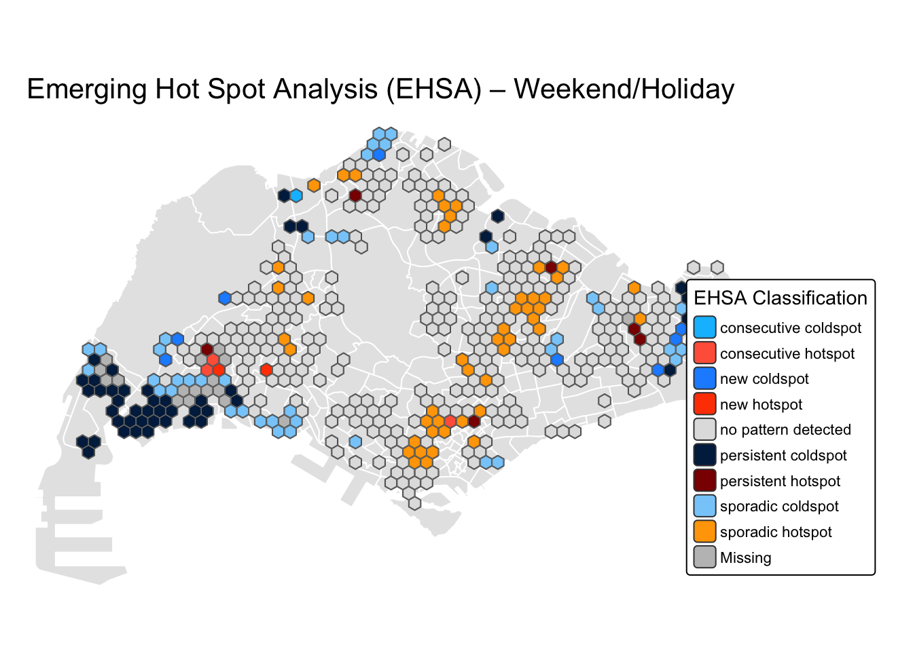